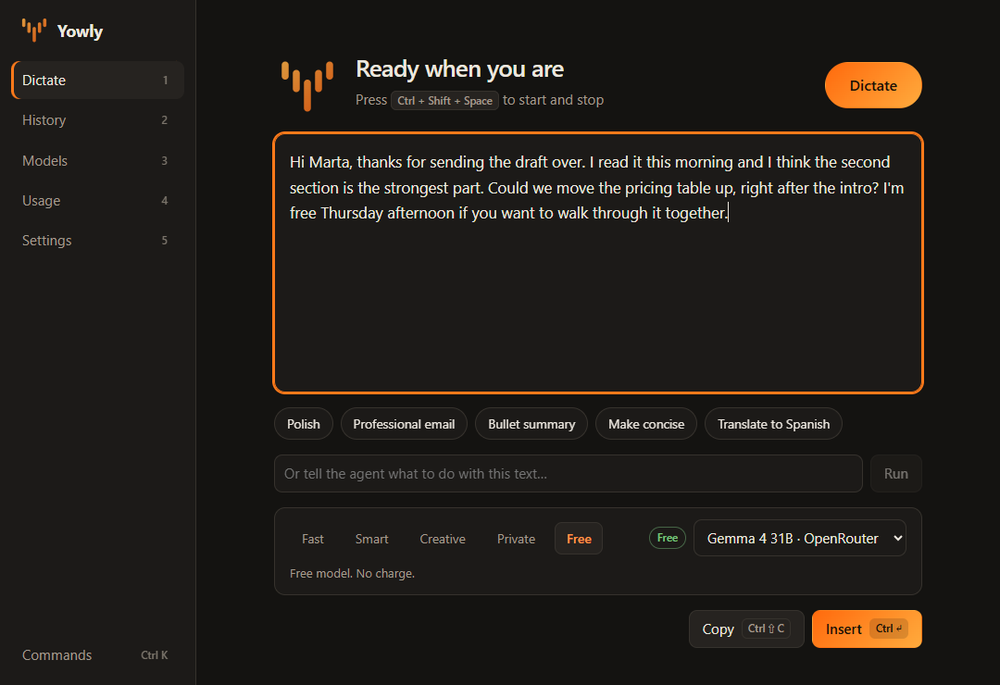

Press the hotkey
One shortcut, anywhere on your desktop. Tap to toggle, or hold it down to talk.
Ctrl+Shift+Space
Free voice dictation for Windows. Press a key, speak, and clean text lands wherever your cursor is.
For Windows. Early preview, version 0.1.

Yowly lives in your tray and works in any app: email, chat, documents, code editors.
One shortcut, anywhere on your desktop. Tap to toggle, or hold it down to talk.
A small pill shows Yowly is listening. Your speech is transcribed on your own computer.
Fillers and stutters are removed, capitals and full stops added. Then it is pasted at your cursor.
um so i think uh we should ship itSo I think we should ship it.
Yowly transcribes with a speech model that runs on your own machine. Audio is never saved, and nothing is uploaded unless you switch a cloud option on yourself.
These are the settings Yowly starts with.
Turn a rough dictation into something ready to send. Pick a transformation, or write your own instruction.